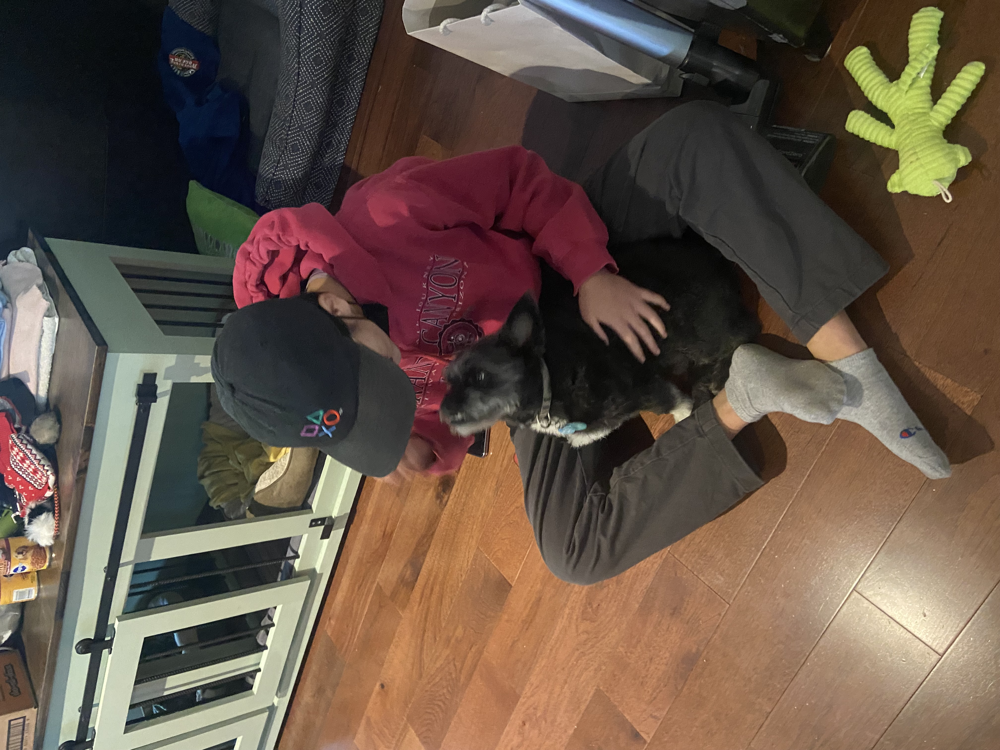
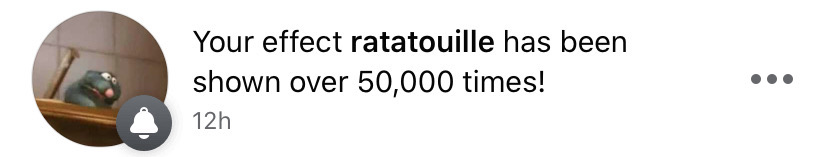

Katie Lin is a product designer and engineer.
I'm interested in alternative models of education, non-games and sandbox environments, social models of computing, design systems, the history of technology, and personal canons.


